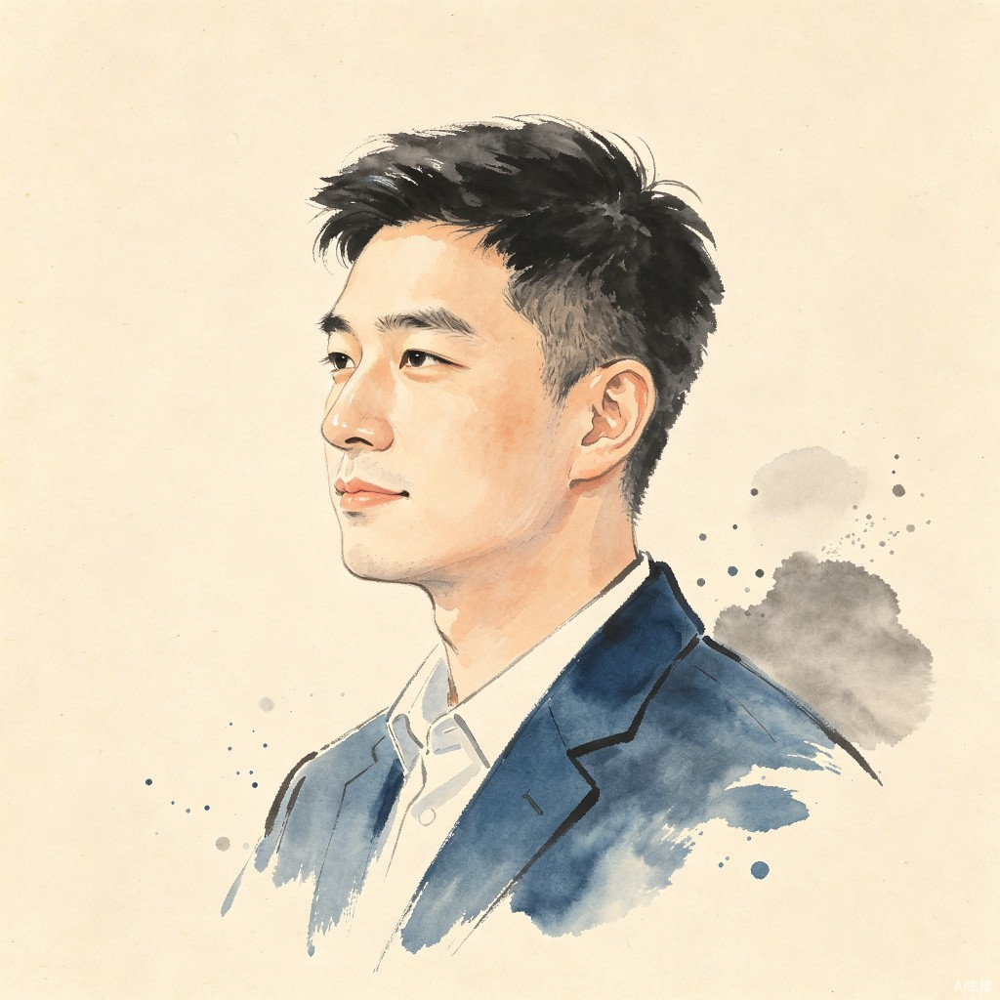

热爱技术和文字的文科生。用 AI 重构工作流，用代码解决真实问题，用文字记录思考轨迹。

不是追风口，是在真实工作中一点点被改变
用 ChatGPT、DeepSeek 获取信息，发现模糊的语句就能得到规范的结果。 AI 是更聪明的搜索引擎。
AIGC 业务让我不再满足于获取信息，开始思考AI 能不能帮我动手做事。
AI 编程工具让我有了用 AI 重构工作流的机会。第一个工具是网页高亮插件——自己开发、验证、落地。 那一刻意识到：依赖研发排期的日子，可以结束了。
深度解析业务工作流，明确 AI 能力边界。是不是一定要 Agent？脚本自动化是否更高效？ 这不是技术问题，是判断力问题。
从内容审核到客服运营，在传统岗位中探索效率突破
2021.7 - 2023.6
担任组内业务专家，负责新规讲解和业务规则梳理。熟悉抖音直播、广告业务线规则，
升任质量运营后负责一线审核质量检测，通过与中台联动优化审核规则。
2023.11 - 至今
同时管理内容审核组和无线音乐工单组，跨越审核和客服工单两个业务模块。
在传统管理上敢于创新突破，独立学习、规划开发多种提效工具，
用技术手段重构运营和业务工作流。
问题解决 + 持续运营
将复杂项目拆解成具体行动，从需求分析到方案设计，从代码实现到用户反馈，
每个环节追求闭环。通过数据分析定位薄弱环节，
用结构化思维重构传统工作流，让指标达成可持续、可复制。
用代码解决真实问题的实践案例，点击卡片查看详细设计开发流程
整合多种AI能力的一站式办公效率平台，自动处理重复工作，重构日常工作流。 旨在解决跨系统操作繁琐、重复劳动多的问题，大幅提升团队整体办公效率。
调研团队日常工作痛点，梳理12项高频重复场景
3周MVP测试，覆盖10名核心用户，效率提升60%
模块化架构设计，支持插件扩展能力
全员培训，编写操作手册，建立反馈通道
每月收集反馈，持续更新功能模块
基于语音识别和大模型的智能质检工具，自动分析客服通话质量，检测合规性问题。 替代传统人工抽检模式，覆盖率从1%提升到100%，漏检率下降85%。
梳理36项质检规则，明确评分标准和违规场景
1000条通话测试，识别准确率达到92%
语音转文字 + 语义分析 + 违规分级全流程自动化
双轨运行3个月，人工复核校准模型精度
规则动态更新，支持自定义质检维度
一键生成规范的办公文档，支持模板自定义、数据自动填充，大幅减少文案工作量。 覆盖投诉回复、工作汇报、运营分析等20+常用文档类型，生成速度提升90%。
梳理常用文档模板，标准化内容结构和格式要求
模板准确率测试，生成文档合格率达到95%
可视化模板编辑器 + 智能变量填充引擎
模板市场上线，支持团队共享自定义模板
持续更新模板库，优化生成逻辑
工单全流程自动化处理，自动分类、派单、生成回复模板，提升客服响应效率。 平均工单处理时长从15分钟缩短到3分钟，客户满意度提升20%。
梳理8大类工单场景，标准化处理流程和回复话术
1个月试点，自动处理准确率达到88%
智能分类引擎 + 自动派单 + 回复模板生成
人机结合模式，人工复核复杂工单
持续优化分类模型，扩展支持工单类型